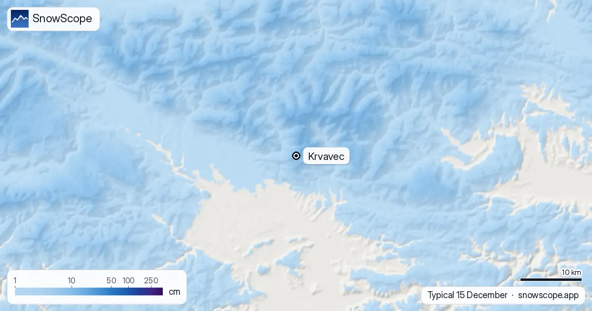
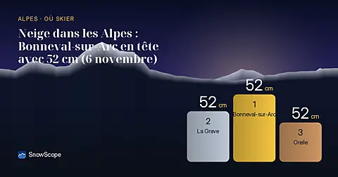

Krvavec en décembre : bon marché et proche de Ljubljana, mais neige naturelle rare
Krvavec est la station que les habitants de Ljubljana rejoignent avant le petit-déjeuner, et ses prix sont parmi les plus bas de cette série : 47 EUR la journée adulte, 205 EUR les 6 jours. Le point dur, c'est l'historique de neige. Un 15 décembre typique, la mi-pente (1718 m) a 13 cm dans nos 46 hivers, et dans 11 de ces hivers le sol était nu ce jour-là.
Consultez les prévisions neige en temps réel pour Krvavec sur l'application SnowScopeHauteurs de neige, alertes poudreuse et carte 3D, gratuitement.
Ce qu'on dit de décembre ici
L'idée répandue : avec des remontées jusqu'à 1963 m, Krvavec est assez haut pour ouvrir tôt. C'est haut pour la Slovénie, et le domaine cartographié est correct : 16 km de pistes et 13 remontées. Mais la neige qui tombe n'est pas la neige qui reste, et sur ce versant sud ensoleillé des Alpes, décembre perd souvent ce que novembre a apporté.


Ce que montrent vraiment 46 hivers
La semaine du 15 au 21 décembre, seuls 24 % de nos hivers avaient 30 cm ou plus à mi-pente, et 28 % au sommet. La semaine de Noël : 28 % et 33 %. Le premier jour habituel avec 30 cm à mi-pente est le 7 janvier.
Pire, la tendance est raide. La moyenne de décembre à mi-pente est passée de 15 cm sur les 15 premiers hivers à 4 cm sur les 15 derniers. La semaine de Noël, 47 % des premiers hivers y avaient 30 cm, contre 13 % des récents. L'hiver dernier, il n'y avait aucune neige naturelle le 15 décembre.
Le côté bon marché
Sur la grille officielle 2026-27, la journée adulte coûte 47 EUR et le forfait 6 jours 205 EUR, avec un prix de prévente à 45 EUR la journée. C'est bien en dessous des glaciers autrichiens. Si les pistes sont préparées, une journée de décembre ici est une excellente affaire ; l'historique dit seulement que, beaucoup d'hivers, la neige naturelle ne suffit pas seule en décembre.
La place du Mölltaler Gletscher
Pour une semaine de décembre sûre, l'option haute la plus proche de notre liste est le Mölltaler Gletscher en Carinthie : 66 cm à sa remontée la plus basse (2103 m) un 15 décembre typique, et 91 % des hivers avec 30 cm la semaine du 15 au 21 décembre. Il coûte plus : 332 EUR les 6 jours en basse saison sur sa dernière grille publiée (2025-26).
Un plan raisonnable pour les skieurs basés en Slovénie : Krvavec pour des journées courtes quand son propre bulletin de neige est bon, le glacier pour une semaine planifiée.
Les petites lignes
Nos chiffres décrivent la neige naturelle au sol aux altitudes de la station ; ils ne disent rien de ce que la station prépare sur ses pistes. Avant d'acheter un forfait de décembre ici, consultez le bulletin de neige et des pistes en direct de la station, et considérez une réservation faite des mois à l'avance comme un pari.
Conseils aux skieurs
- Vérifiez le bulletin des pistes le jour même : la neige naturelle seule n'a donné 30 cm à mi-pente mi-décembre que dans 24 % de nos hivers.
- En décembre, achetez à la journée plutôt qu'un forfait 6 jours, sauf si le bulletin montre une bonne sous-couche.
- Pour une semaine fixe avant Noël, montez plus haut : le Mölltaler Gletscher est l'option sûre la plus proche.
- Hors-piste après une rare tempête : lisez d'abord le bulletin d'avalanches slovène.
Autres cartes (sites externes)
Références et crédits
- Krvavec: official lift-pass prices (2026-27), checked 13 November 2026 rtc-krvavec.si/cenik-urnik
- Mölltaler Gletscher: official lift-pass prices (2025-26), checked 13 November 2026 www.moelltaler-gletscher.at/en/price-list/winter/moelltaler-gletscher
À propos de ces chiffres
Chiffres de neige : historique SnowScope, 46 hivers passés (1980-81 à 2025-26) aux altitudes de la station, corrigé de l'altitude (une estimation pour une zone, pas les bulletins de la station) ; « bonne neige » = 30 cm ou plus au sol en moyenne sur la semaine. Carte : notre hauteur habituelle au 15 décembre répartie sur le relief selon l'altitude. Pistes et remontées : cartographie OpenSkiMap. Forfaits : grilles officielles des stations, vérifiées le 13 novembre 2026 ; les prix peuvent changer.
Bulletins d'avalanche officiels: ARSO – Slovenian Environment Agency
Citer ce bulletin
Pour la recherche, l'enseignement ou la presse : chiffres et graphiques réutilisables librement sous CC BY 4.0 avec cette citation.
SnowScope (2026), Krvavec en décembre : bon marché et proche de Ljubljana, mais neige naturelle rare, https://snowscope.app/blog/fr/2026/11/krvavec-december-skiing-ljubljana-honest-snow.html, consulté le 2026-11-14
SnowScope (Atlas Labs). (2026, November 14). Krvavec en décembre : bon marché et proche de Ljubljana, mais neige naturelle rare. SnowScope snow reports. https://snowscope.app/blog/fr/2026/11/krvavec-december-skiing-ljubljana-honest-snow.html
BibTeX
@misc{snowscope2026krvavecdecemberskiinglju,
author = {{SnowScope (Atlas Labs)}},
title = {Krvavec en décembre : bon marché et proche de Ljubljana, mais neige naturelle rare},
year = {2026},
month = nov,
howpublished = {\url{https://snowscope.app/blog/fr/2026/11/krvavec-december-skiing-ljubljana-honest-snow.html}},
note = {Published 2026-11-14 20:54 UTC; accessed 2026-11-14}
}· CC BY 4.0 · Méthodes, données et outils →
Krvavec : neige et température selon l'altitude, cet hiver vs l'hiver dernier (outils) →
Suivre Krvavec
Gratuit : un message quand la neige arrive, et la météo chaque matin.
Autres bulletins neige

Bonneval-sur-Arc (France) a la neige la plus épaisse dans les Alpes aujourd'hui, avec environ 52 cm sur le haut du domaine. Suivent La Grave avec …

Un séjour de 3 jours pas cher au lac de Côme en décembre, avec les vrais prix 2026-27 : trains, bateaux, funiculaire et ski à Piani di Bobbio ou Madesimo, l'économie par rapport à Cortina et les chances de neige à Noël.